最终目标
所有推进都指向敌方水晶。逆风时守住高地，顺风时别只追人，要把胜势转化成拆塔和破水晶。
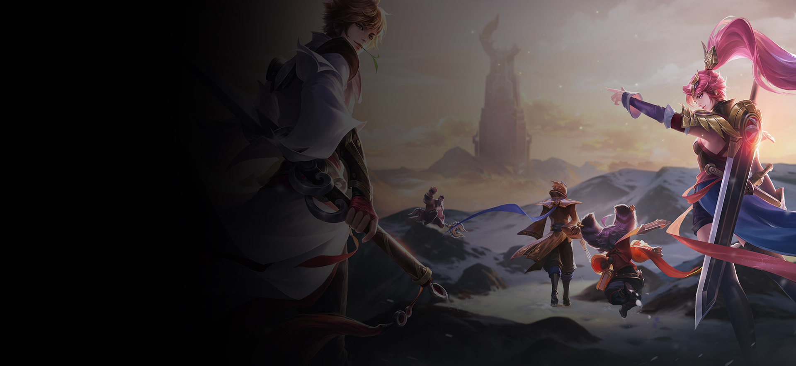
背景故事
王者荣耀的世界把东方神话、历史想象和原创幻想融合在一起。英雄带着身份、阵营和宿命走进峡谷，再通过玩家的操作变成一场场具体的战斗。
对新玩家来说，可以先把故事理解成三层：英雄的来历解释他是谁，技能机制解释他能做什么，分路定位解释他怎样帮助团队赢。
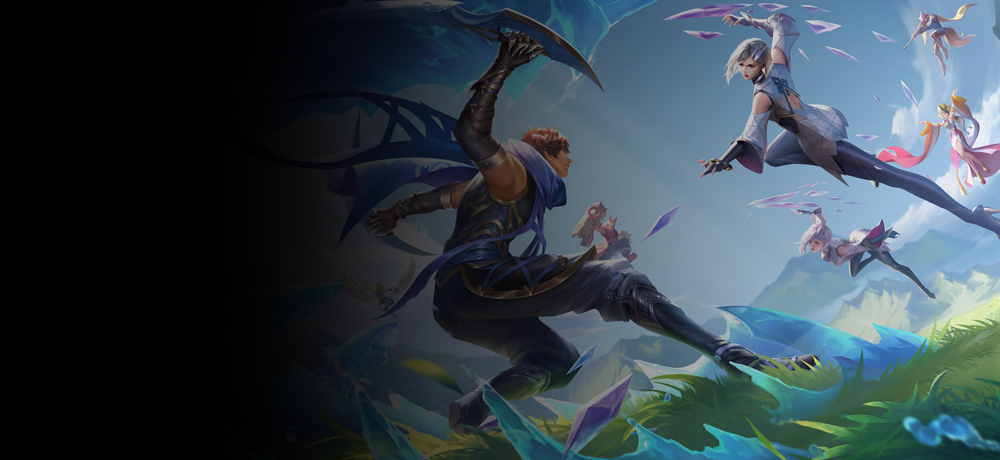
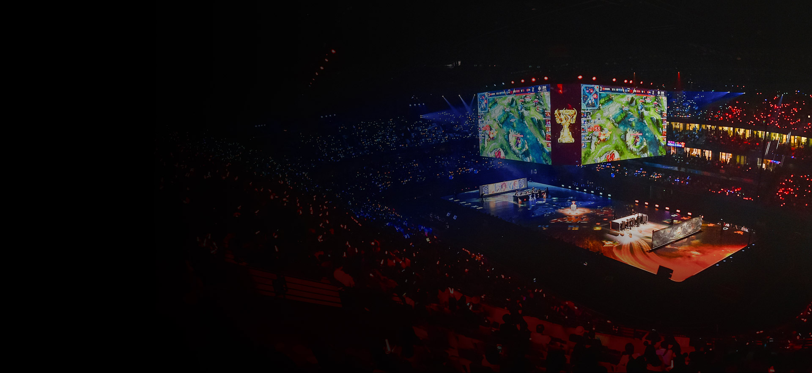
王者峡谷
一局游戏可以拆成四件事：清兵、占视野、拿资源、推塔。击杀只是手段，真正的胜利来自持续把优势变成地图推进。
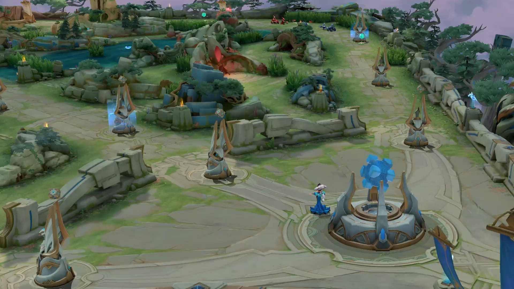
所有推进都指向敌方水晶。逆风时守住高地，顺风时别只追人，要把胜势转化成拆塔和破水晶。
推掉外塔后，野区入口和河道会更容易被控制。塔掉得越多，对手越难安全发育。
河道连接三路与野区。草丛、支援路线和龙坑视野，往往决定下一波团战先手权。
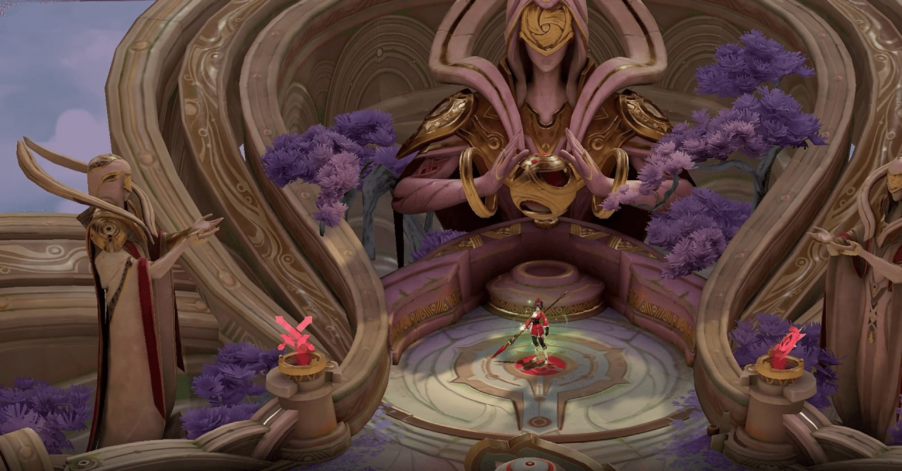
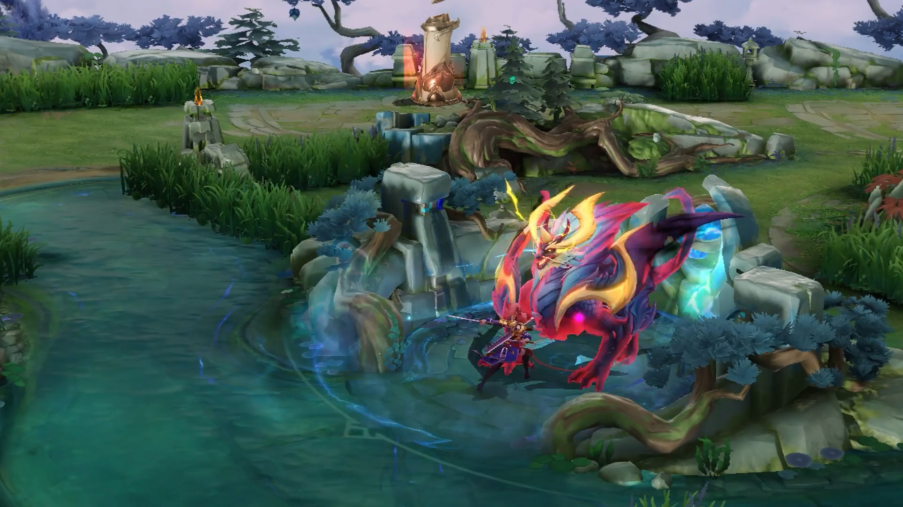
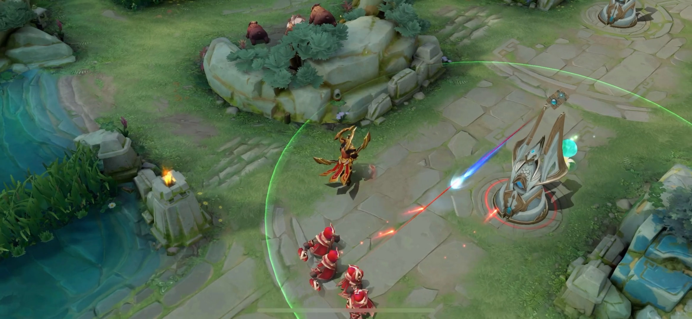
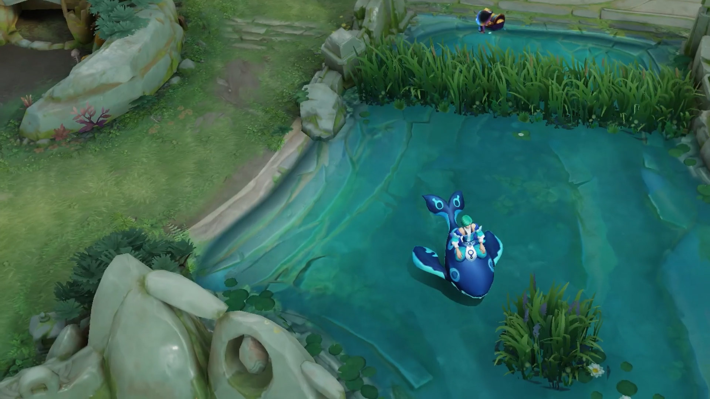
英雄打法
每个位置都有自己的任务。新手最容易犯的错不是技能按慢了，而是不知道这一分钟该清线、支援、发育还是开团。
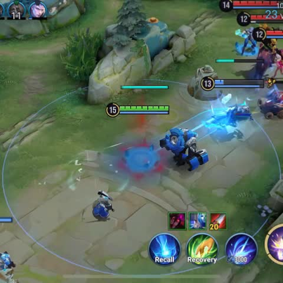
对抗路
适合喜欢单线博弈和关键开团的玩家。前期稳住兵线和换血，中期跟团或边带，后期寻找绕后进场机会。
英雄样本
真实对局中，一个英雄可能兼具多种能力，但你先抓住它最核心的团队价值就够了。
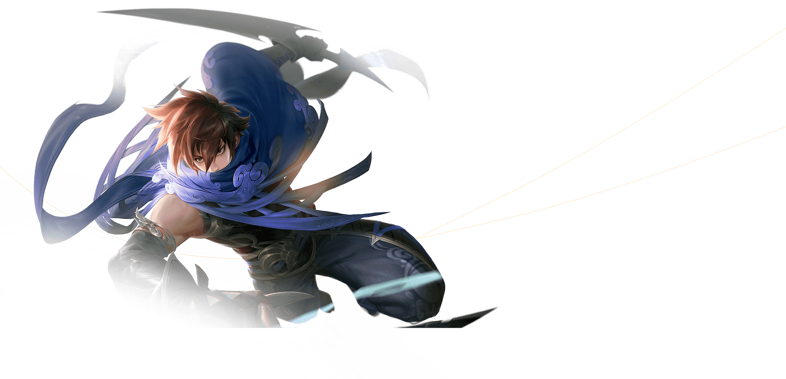
战士常在边路发育，团战中负责承伤、切入或分割战场。侧翼入场更容易打出价值。
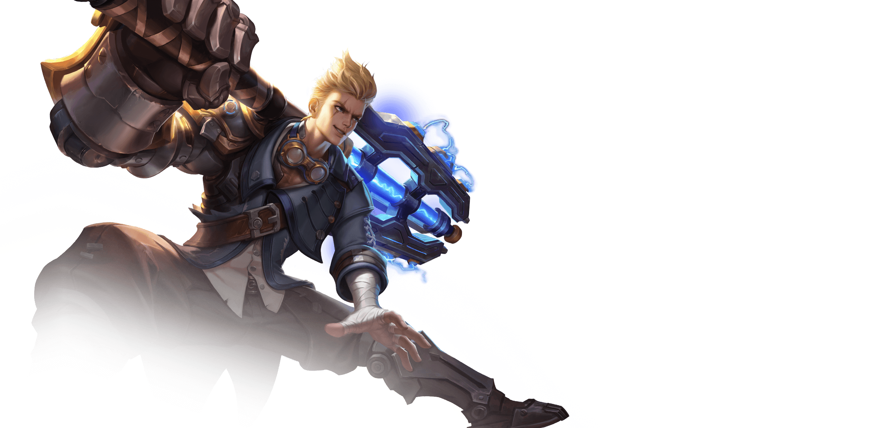
等敌方关键控制交掉，再切射手或法师，击杀后立刻撤出战场。
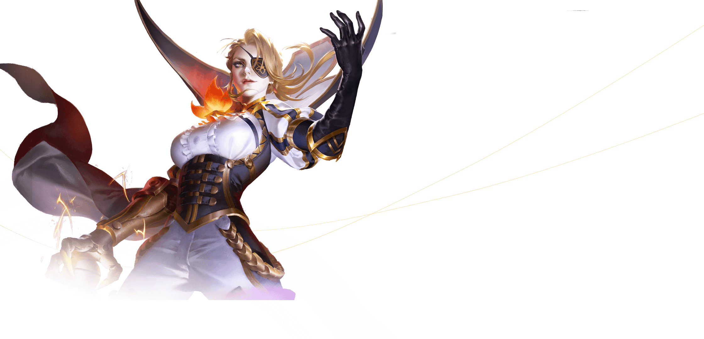
快速清中线，然后支援边路或配合打野。团战靠后站，用技能限制敌方进场。
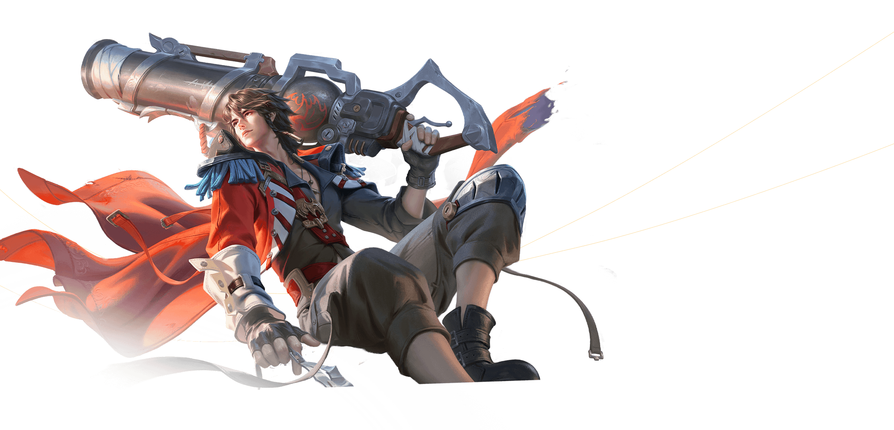
前期重视发育，团战站在队友保护范围内，谁进场就先打谁。
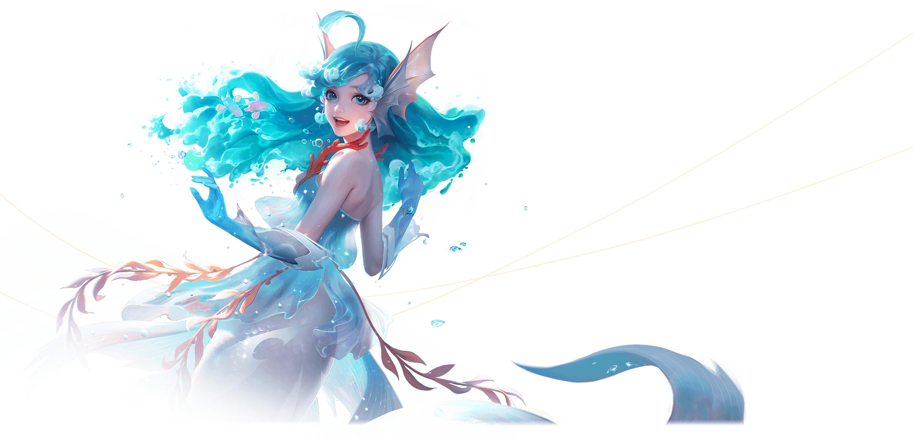
提前探草、保护核心输出，并在队伍准备好时开出第一波节奏。
官方视觉图集
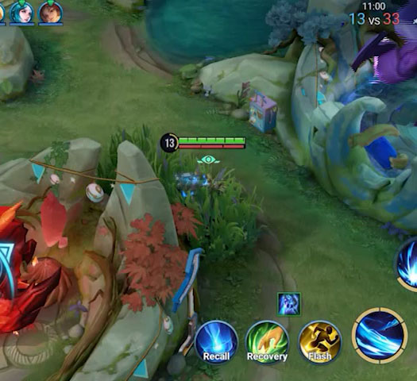
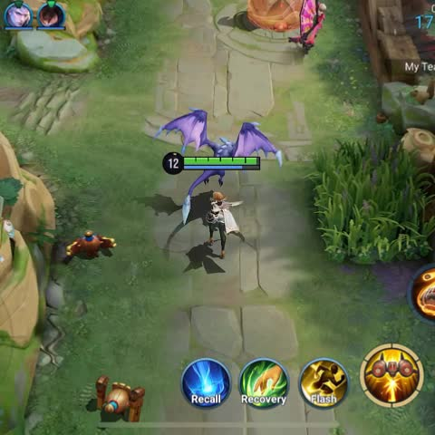
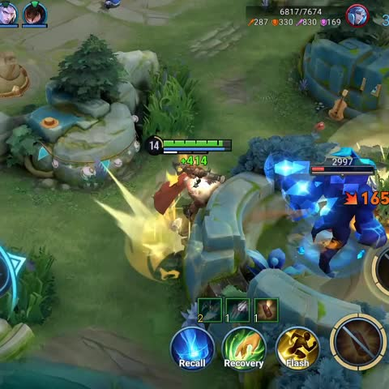
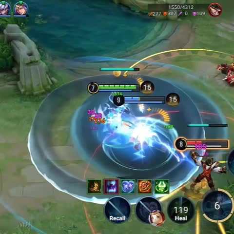
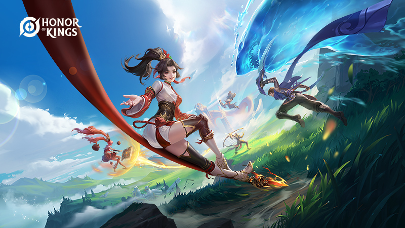
新手路线